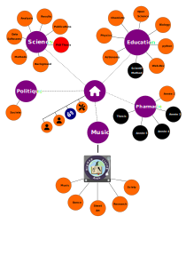

Encyclopédie
collaborative


Pour co-construire et documenter nos expériences d'apprentissages
Bienvenue sur la page d'acceuil de mon encyclopédie en ligne. une base de construction, de réflexion et de partage de mes connaissances.
La science est gangréné par un système de publication commercial qui asservit les chercheurs en les forçant a adopter une démarche productivistes et concurentiels vis a vis de leur résultats. J'ai voulue échapper a ce système en développant mon propre moyen de communication scientifique tout en espérant que cela plaise a mes supérieurs. Malhereusement ce ne fut pas le cas, et je ne suis pas devenue chercheur, mais j'ai continué mes experimentations sur la publication alternative.
Qui suis-je ?
Vincent Deguin
"Explorateur de la connaissance et aventurier de l'intelligence collective"
Je considère chaque projet que j’entreprends comme une nouvelle aventure, une occasion de repousser les limites et d’explorer de nouvelles idées.

 Français (33 ans)
Français (33 ans)
Plusieurs (cf infographie ci-dessous)
 Freelance, Social Entrepreneur
Freelance, Social Entrepreneur


Mon Parcours
Architecture WEB par Vincent DeguinMon parcours personel et la génèse du projet
J’ai eu la chance et l’honneur de participer a un projet de recherche dont l’objectif était de mieux comprendre la formation des planètes …
WTF Jackie chan meme
Mon Projet
"Des outils et des méthodes qui permettent à chacun de digérer l'information"
Nous vivons dans un monde où l’information est omniprésente. Présente sous des formes multiples, elle est accessible d’un simple clic et, par le biais du téléphone portable, elle est presque devenue une extension de notre corps. La connaissance, en revanche, fruit de l’analyse, de l’interprétation et de la synthèse approfondie d’une source d’information, est beaucoup moins répandue. Cela s’explique par le fait qu’elle implique la capacité à questionner, utiliser ces informations et les relier à d’autres concepts, ce qui n’est pas chose aisée. C’est dans l’optique de développer mon esprit d’analyse, de synthèse et, plus généralement, mon esprit critique, que j’ai entrepris cette œuvre, qui m’apporte de nombreux avantages par rapport aux méthodes traditionnelles.
Quels outils? Inventaire et cahier des charges
Note
Définir open source …
Je n’ai rien a vendre!
Discuter des différents bénéfices a l’echelle individuelle
Note
Parler des différents objectifs
Compliqué a prendre en main
Expliquer
Expliquer
Voici les différents logiciels que j'utilise
Combien en connais-tu?
Note
Utilise la fonction annotation pour répoondre.
"Afin que tous, nous puissions construire et partager nos connaissances"
Apprendre
Documenter
Transmettre
De manière fun et créative
Plus d’info
Note
lien vers page david louapre
J’aime apprendre mais surtout j’aime Faire apprendre. Le monde naturelle qui nous entoure, et avec lequel on interragit quotidiennement (souvent sans le savoir), est d’une beauté incommensurable qui n’a d’égale que sa complexité. J’ai eu la chance de rencontrer trés top une enseignante qui m’a donné le gout de la lecture et c’est je pense la seule fois ou le millieux éducatif a eu un impact positif, en me développant un esprit curieux. Le reste de mon cursus peut se résumer a un long et incipide cheminement visant a m’aiguiller vers une case sociale, définit par un travaille, un salaire et donc un statut sociale.
"Pour co-créer Des Bases de Réflexions et vivre sur Une Planète Apprenante"
Petite vidéo explicative
Qu’est ce que j’entends par base de réflexion
Dans un premier temps, j’aimerai vous expliquer comment j’utilise cette plateforme..
Note
Parler des différents objectifs
La littérature, les arts visuels, la musique sont autants d’arts qui permettent d’éveiller les sens et de mieux ressentir notre environement. Internet permet de combiner ces différentes formes d’art dans un même format et j’aimerai en associer le plus possible pour créer un contenue qui parle et qui soit agréable au lecteur. En utilsant les outils de mise en page que m’offre le ‘language css’, J’essaie de mettre en place plusieurs niveaux de lecture. Vous verrez également que certains contenue sont cachés, ou tout de moins le lecteur est obligé de cliquer pour accéder au contenue. J’ai fait cela pour rendre le lecteur actif vis a vis du contenu et ca me permet également de rentrer dans la détail d’un concept et d’en explorer les différentes ramifications sans surcharger la page. Le tou me permettant une immense créativité vis a vis de la mise en récit de l’histoire que je souhaite raconter.
Ce que j’entend par Libre, c’est que j’écris sur ce qui m’intéresse, sans aucune restriction et de manière totalement subjective. Il en est de même pour toute les personnes qui souhaiteraient participer ou écrire sur le site. La seule chose a laquel je refuse de déroger est la bienveillance dans les propos qui sont tenus.
Coté artistique, création libre
J’ai construit ce site (et tout les autres), grace a des technologie Open-Source. Les deux principales sont Jupyter Book et Github. J’aimerai d’ailleurs et c’est un des objectifs de ce site, de promouvoir ces technologies open-source et a quels point elles peuvent apporter une alternative viable aux GAFAM (Google, Apple, Facebook, Amazon, et Microsoft)
J’aimerai beaucoup apporter une dimension collaborative a mon projet et Github m’en donne la possibilité. En revanche, Github est un logiciel technique qui demande un apprentissage approfondie avant de pouvoir l’utiliser de manière routinière (moi même qui l’utilise depuis 2 ans n’en suis qu’a mes débuts). En revanche avant de co-écrire, il vous est tout de même possible de commenter et d’annoter le contenue de chaque page alors faites vous plaisir!
Oui je n’ai rien payé (en dehors de mon temps et d’un peu de sueur) pour créer ce site. Ce qui rend la méthode quasi universelle (pour qui possède un ordinateur et les connaissances nécessaires a l’utilisation des technologies mentionnés plus haut)
Cela limite le champ d’action comme par example:
Une URL longue et difficilement partageable
Une limitation au niveau de la taille des fichier (2Go)
Mais ca préserve une totale indépendance (et c’est pour l’instant le plus important)
Oui tout le monde et le bienvenue et peut participer. Je ne récolte aucun cookies (enfin je crois), et ne m’intéresse absolument pas a votre vie privée. Du moment que vous êtes motivés pour naviguer sur les chemins de la connaissances, je veux de vous dans mon équipage.
Ma Base de Connaissance


{kind=link}
Plus d’info
Flux RSS
Note
A insérer!
Version:
 0.1
0.1Status: 💚
Langue:
Version:
0.1Status: 🧡
Langue:
Version:
0.1Status: 💚
Langue:
Version:
0.1Status: 💚
Langue:
Une toile vivante
Warning
A retravailler
Objectifs
✅ Bloc-Note, Organiseur, Archives en ligne
Note
Faire le lien avec bullet journal
🔧 Une Fabrique Collective de Savoirs
🔧 Plateforme de Publication & Dialogue
🔎 Toile Educative Sociale & Sémantique
Et Maintenant?
"Explore,
Quelques conseils de lecture
En fonction de ta curiosité, voyage de planète en planète, de manière fluide en te laissant guider par tes centres d’intérets.
Alors je sais qu’aujourd’hui une bonne partie du contenue est consommé a partir des téléphones portables.
Oui c’est important de prendre le temps de regarder et lire le contenue.
Plusieurs niveaux de lecture
Créer une liste de lecture avec les pages les plus abouties
Apprends,
Et Contribue !"
Comment ?
Il y a en bas de chaque page une section Commentaires. Cette section te permet de donner un avis générale sur le contenue de la page, axes d’amélioration …
Note
Insérer capture d’écran
Charte des commentaires ?
Intéragit directement avec le contenue pour demander des précisions, poser une question ou bien montrer qu’il ya une erreur …
Pas encore disponible. Utiliser la fonction Github Branches pour permettre a chacun de télécharger la doc complète et d’effectuer directement des modifications sur la page.
Note
Compétence avancées de Github a obtenir
Workflow spécifique a mettre en place
Kofi
Patreon
Tu peux aussi me contacter directement si tu as des questions ou si tu veux contribuer de manière plus importante. J’ai un nombre infinit d’idées, certaines assés farfelues comme le fait d’ajouter des planches de bandes déssinés pour complémenter le contenue et créer des personnages auquel le lecteur puisse s’identifier. Je n’ai aucune compétence dans le dessin (à mon grand regret), mais peut être que toi tu en as :), si c’est le cas et que tu as le temps d’apprter ta contribution n’hésite pas a me contacter.
mail: ()
🔥 Les Actualités
Note
Insérer ici les sites sur lequel on travaille